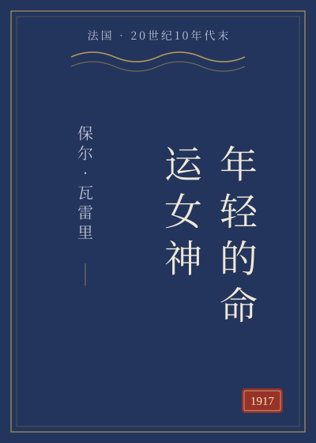
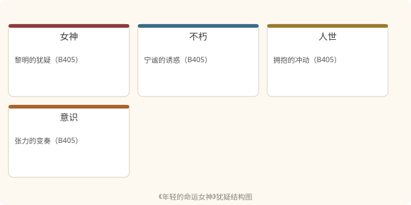

年轻的命运女神
一、基本信息
| 作者 | 保尔·瓦雷里 |
|---|---|
| 成书/出版 | 1917年（Britannica B405：La Jeune Parque (1917; The Young Fate)——'His greatest poem is considered La Jeune Parque'） Paul Valery — Encyclopaedia Britannica（百科全书） |
| 国别/地区 | 法国 |
| 时代 | 近代 · 20世纪10年代末 |
| 体裁 | 长诗 |
| 语言 | 法语 |

《年轻的命运女神》犹疑结构图（主题·结构图）
二、创作背景
Britannica（B405）：'His greatest poem is considered La Jeune Parque (1917; The Young Fate)'——三女神中最年轻者的意识觉醒——黎明的海边在'永葆宁谧的不朽'与'拥抱人世'之间犹疑——历时五年完成。
Britannica（B405）：瓦雷里——'rise at dawn each day, meditate for several hours on scientific method, consciousness, and the nature of language'。
题材（通说待核）：512行的'意识'独白（行数通说待核）。
三、内容脉络
（通说待核）黎明海边的女神：不朽与人世之间的犹疑（B405：hesitates by the sea at dawn）。
（通说待核）'意识'觉醒的自白（B405：consciousness awakening）。
四、主要人物表
| 人物 | 身份 | 说明 |
|---|---|---|
| 年轻的命运女神 | 犹疑者 | （B405 书名人物——the youngest of the three Fates） |
五、主题与艺术特点
- '意识在沉思欲望与行动意志之间的张力'（B405：the tension within the human consciousness...）。
- '历时五年'（B405）。
- '古典形式'的现代智性（B405：always classical in form）。
六、影响与评论
- Britannica：'His greatest poem is considered La Jeune Parque'（B405）。
Paul Valery — Encyclopaedia Britannica（百科全书） - Britannica：'variations on the theme of the tension...'（B405）。
Paul Valery — Encyclopaedia Britannica（百科全书）
七、阅读建议
难点
- 512行的'意识'独白（行数通说待核）。
- '命运女神'神话底本。
- 《年轻的命运女神》中译名（《命运女神》）待核。
- 法文原版（公有领域状态待核）。
瓦雷里进阶；先读《海滨墓园》。
八、待核实
- 行数（512行说）核对（通说）。
- 1917年出版（NRF说）待核。
- '五年完成'核对（B405已载）。